第 13 章 直方图处理#
本章解决：图像最浓缩的统计表达就是直方图（histogram）——一排数字回答"每个灰度级上有多少个像素"。对比度差、过暗、过亮的图像，问题都写在直方图的形状里：像素挤在窄区间。本章先讲清直方图的定义与 DIMS、BINS、RANGE 三个概念，再用 matplotlib 与
cv2.calcHist两种方式计算和绘制直方图（含掩模局部统计），最后用累计直方图做区间转换，实现直方图均衡化，把挤在一起的灰度级摊开到整个灰度空间。直方图是后续阈值处理、模板匹配、图像比较等操作的公共地基。
运行环境约定
原书本章素材 image\boat.jpg、boat.bmp、boatGray.bmp、girl.bmp、equ.bmp、8.bmp 不在素材目录中。本章统一换用素材目录里的图片顶替：picture1.jpg 顶替 boat 系列（1080×1920×3）、picture2.png 顶替 girl/8（1387×1040×3）、picture12.jpg 顶替 equ（1522×1080×3，灰度均值约 57 的暗图，均衡化效果明显）。代码结构保持原书，仅两处写法按实测修正：calcHist 的 ranges 用 [0, 256]（原书 [0, 255] 会丢掉灰度值 255 的像素，见 13.2.2 节说明）；掩模区域按素材图尺寸适配。所有控制台输出均为 OpenCV 4.13 + NumPy 2.2 + Matplotlib 3.10 环境实测。
13.0 本章导图#
13.1 直方图的含义#
从统计的角度讲，直方图是图像内灰度值的统计特性与图像灰度值之间的函数：它统计图像内各个灰度级出现的次数。从图形上看，横坐标是图像中各像素点的灰度级，纵坐标是具有该灰度级（像素值）的像素个数。
用一个 9 像素的小图把这件事说透。图 13.1 的图像只有 9 个像素点，存在 1、2、3、4、5 共 5 个灰度级：
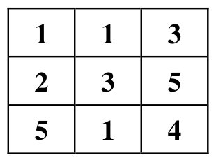
逐个灰度级数一遍，得到表 13-1：
| 灰度级 | 1 | 2 | 3 | 4 | 5 |
|---|---|---|---|---|---|
| 出现的次数 | 3 | 1 | 2 | 1 | 2 |
绘制直方图时，灰度级作 x 轴、出现次数作 y 轴：
- x 轴数据为 x = [1, 2, 3, 4, 5]；
- y 轴数据为 y = [3, 1, 2, 1, 2]。
据此画出的折线图（左）与直方图（右）见图 13.2。习惯上，把这两种形态都称为直方图。
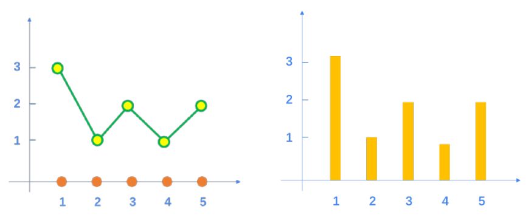
实际处理中，图像直方图的 x 轴区间一般是 \([0, 255]\)，对应 8 位位图的 256 个灰度级；y 轴是具有相应灰度级的像素个数。统计时，每个像素按自己的灰度值被归入对应的灰度级。8 位图像都有 256 个灰度级，但属于不同灰度级的像素数量差别很大。同一幅图的不同部分，直方图也不一样（图 13.4）——这正是直方图能区分亮区、暗区的原因。
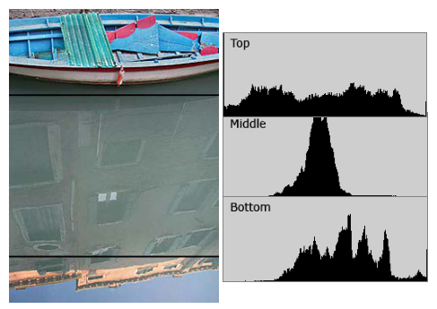
归一化直方图#
有时为便于表示，会采用归一化直方图（normalized histogram）：x 轴仍是灰度级，y 轴从"次数"换成"频率"：
图 13.1 共 9 个像素，统计结果见表 13-2：
| 灰度级 | 1 | 2 | 3 | 4 | 5 |
|---|---|---|---|---|---|
| 出现的频率 | 3/9 | 1/9 | 2/9 | 1/9 | 2/9 |
归一化直方图中，各灰度级出现的频率之和为 1。此时 x 轴数据仍为 x = [1, 2, 3, 4, 5]，y 轴数据为 y = [3/9, 1/9, 2/9, 1/9, 2/9]，画出的归一化直方图见图 13.5。
原书笔误：频率求和式
原书在验证"频率之和为 1"时写成 3/9 + 1/9 + 2/9 + 1/9 + 1/9 = 1，最后一项与表 13-2 不符，且五个数加起来只有 8/9。按表应为 3/9 + 1/9 + 2/9 + 1/9 + 2/9 = 1。
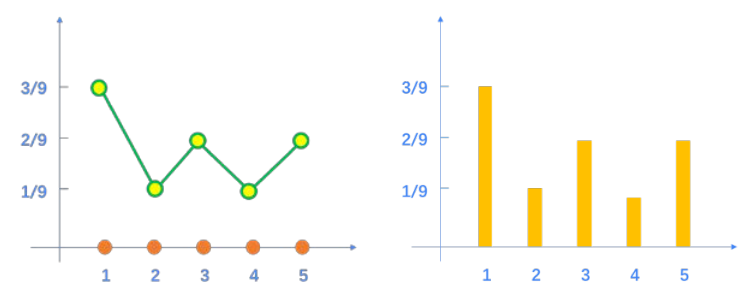
对比可见：归一化直方图与直方图外观完全一致，只是 y 轴标签不同——普通直方图标 1、2、3，归一化直方图标 1/9、2/9、3/9。
DIMS、BINS、RANGE#
OpenCV 官网特别提醒三个概念：
| 概念 | 含义 | 常用取值 |
|---|---|---|
| DIMS | 绘制直方图时收集的参数的数量 | 通常为 1，只收集灰度级 |
| RANGE | 要统计的灰度级范围 | \([0, 255]\)，0 对应黑色，255 对应白色 |
| BINS | 参数子集的数目 | 256 个灰度级划分为若干组时的组数 |
BINS 的意义在于分组。有时数据太散，需要把众多灰度级划成若干组再分析。针对图 13.1 的 5 个灰度级，若两个像素值一组，可划分为 \(\{\{1,2\}, \{3,4\}, \{5\}\}\) 三组，划分前后的直方图见图 13.6。
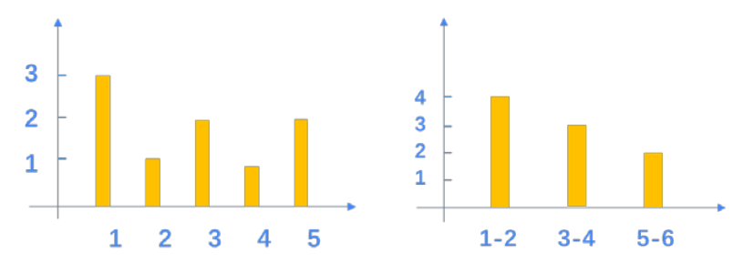
灰度图像同理。把 \([0, 255]\) 内的 256 个灰度级按每 16 个一组划分：
整个灰度级范围被划成 16 个子集：整个灰度级范围 = bin1 ∪ bin2 ∪ … ∪ bin16，得到的直方图见图 13.7（b1 代表 bin1，b2 代表 bin2，以此类推）。
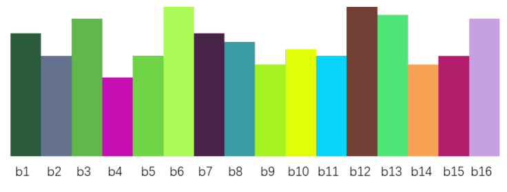
BINS 的值随分组变化：
- 图 13.1 的原始图像有 5 个灰度级，BINS 为 5；按 2 个灰度级一组划分后得到 3 个子集，BINS 为 3；
- 灰度图像有 256 个灰度级，BINS 为 256；按 16 个灰度级一组划分后，BINS 为 16。
13.2 绘制直方图#
两条路线：matplotlib.pyplot 的 hist() 函数直接绘制；cv2.calcHist() 先统计、再配 plot() 绘制。
13.2.1 使用 Numpy 绘制直方图#
matplotlib.pyplot 提供了一个类似 MATLAB 的绘图框架，其中的 matplotlib.pyplot.hist() 函数（下称 hist() 函数）根据数据源和灰度级分组绘制直方图，基本语法格式为：
两个参数：
- X：数据源，必须是一维的。图像通常是二维的，要先用
ravel()函数把图像处理成一维，再作参数； - BINS：BINS 的具体值，即灰度级的分组情况。
ravel() 的作用是把二维数组降为一维。例如图像 a：
| 21 | 34 | 63 |
|---|---|---|
| 142 | 231 | 59 |
| 67 | 138 | 74 |
执行 b = a.ravel() 后，b 为 [21, 34, 63, 142, 231, 59, 67, 138, 74]，按行顺序拉成一条线。
【例 13.1】使用 hist() 函数绘制一幅图像的直方图。
# ===== 13.2.1 例 13.1：matplotlib.hist 绘制直方图（原书 boat.jpg → picture1.jpg） =====
import cv2
import matplotlib.pyplot as plt
o = cv2.imread("picture1.jpg") # 读入彩色图（原书 image\boat.jpg）
cv2.imshow("original", o) # 显示原图
plt.hist(o.ravel(), 256) # ravel 拉平成 1 维；按 256 个灰度级分组统计
cv2.waitKey()
cv2.destroyAllWindows()
运行结果见图 13.8：左图是原始图像，右图是对应的直方图。注意 o.ravel() 把三通道一起拉平，统计的是 B、G、R 全部像素值的混合分布。
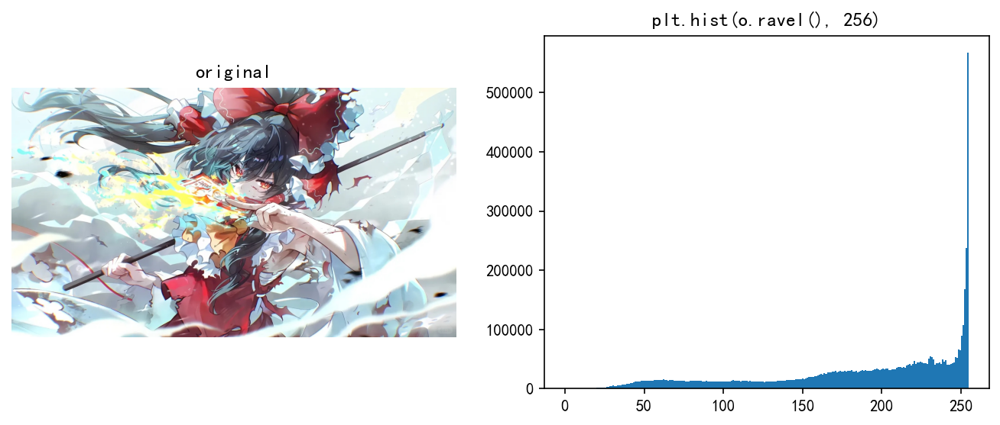
【例 13.2】把灰度级划分为 16 组后绘制直方图。
# ===== 13.2.1 例 13.2：BINS=16 的直方图（原书 boat.bmp → picture1.jpg） =====
import cv2
import matplotlib.pyplot as plt
o = cv2.imread("picture1.jpg") # 原书 image\boat.bmp
plt.hist(o.ravel(), 16) # 256 个灰度级划成 16 个子集，BINS=16
结果见图 13.9：整个灰度级被分成 16 个子集，每根柱子对应一个 16 级宽的区间。
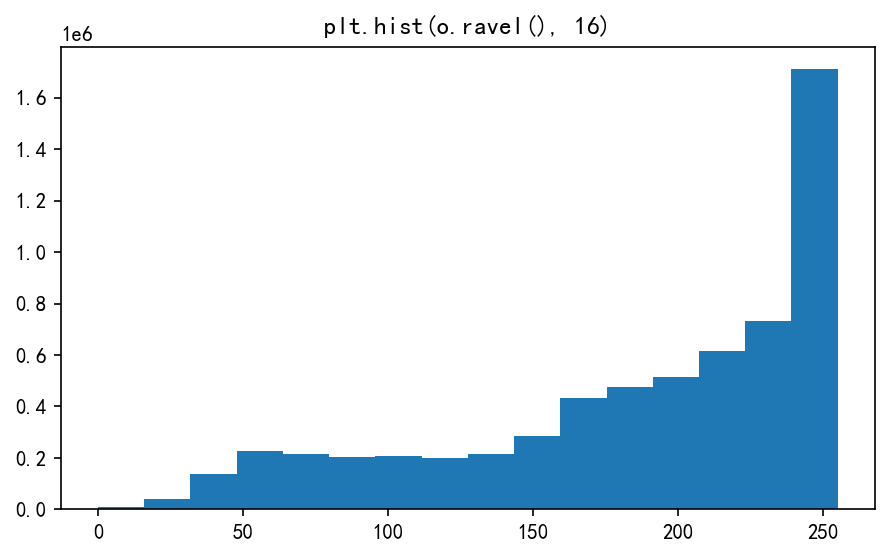
拓展：ravel() 与 flatten() 的区别
两者都能把多维数组降为一维，区别在内存：ravel() 返回视图（view），改它会改动原数组；flatten() 返回副本（copy），改动互不影响。直方图统计只读不写，用 ravel() 更省内存；如果之后还要修改拉平结果，用 flatten() 更安全。
13.2.2 使用 OpenCV 绘制直方图#
OpenCV 提供函数 cv2.calcHist() 统计图像直方图，再用 matplotlib.pyplot 的 plot() 函数把统计结果画出来。
1．用 cv2.calcHist() 统计直方图信息#
返回值与参数逐个看：
| 参数 | 含义 | 写法要点 |
|---|---|---|
| hist | 返回的统计直方图 | 一维数组，元素是各灰度级的像素个数 |
| images | 原始图像 | 必须用方括号括起来，写 [img] |
| channels | 指定通道编号 | 也要用方括号：灰度图 [0]；彩图 [0]/[1]/[2] 对应 B/G/R |
| mask | 掩模图像 | 统计整幅图设 None；统计局部区域传掩模 |
| histSize | BINS 的值 | 用方括号括起来，如 [256] |
| ranges | 像素值范围 | 8 位灰度图像建议写 [0, 256] |
| accumulate | 累计（累积、叠加）标识，可选 | 默认 False；True 时直方图开始计算前不清零，得到多个直方图的累积结果，可用于对一组图像统计或实时更新，一般不设 |
原书写法有坑：ranges 建议写 [0, 256]
原书统一写 ranges=[0, 255]，概念上没错（8 位图的像素值范围确实是 0~255），但作为 calcHist 的参数会丢数据：histSize=256 时每个 bin 宽 (255−0)/256≈0.996，灰度值 255 落在最后一个 bin 之外，被整体丢弃。实测 picture2.png：[0, 255] 时第 255 号 bin 为 0（1039 个灰度 255 的像素没被统计，直方图总和比像素总数少 1039），[0, 256] 时为 1039、总和恰好等于像素总数。OpenCV 官方文档的示例写法也是 [0, 256]。本章代码统一用 [0, 256]。
【例 13.3】用 cv2.calcHist() 计算统计直方图，观察返回值。
# ===== 13.2.2 例 13.3：calcHist 统计直方图信息（原书 boat.jpg → picture1.jpg） =====
import cv2
img = cv2.imread("picture1.jpg", cv2.IMREAD_GRAYSCALE) # 读灰度图（原书 image\boat.jpg）
hist = cv2.calcHist([img], [0], None, [256], [0, 256]) # 参数全部按写法要点给
print(type(hist)) # 返回值类型
print(hist.shape) # 形状
print(hist.size) # 元素总数
print(hist[:6]) # 前 6 个灰度级的统计值（原书打印全部 256 行）
本例的 calcHist() 参数：
- 第 1 个参数
[img]：要统计直方图的原始图像，用方括号括起来； - 第 2 个参数
[0]：统计哪个通道。img 是灰度图像，用[0]； - 第 3 个参数
None：不用掩模，统计整幅图像； - 第 4 个参数
[256]：BINS 的值是 256； - 第 5 个参数
[0, 256]：统计范围覆盖全部 256 个灰度级。
控制台输出（实测）：
程序输出见图 13.10。返回值类型是 ndarray，shape 为 (256, 1)——256 行 1 列；size 为 256——恰好对应 256 个灰度级各自出现的次数。前 6 条数据就是灰度级 0~5 的像素个数。
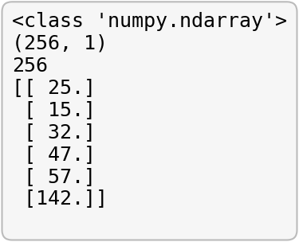
用一个手算就能核对的小数组验证 calcHist 的计数逻辑（就是图 13.1 那幅 9 像素小图）：
# ===== 13.2.2 动手验证：图 13.1 的小数组，calcHist 与手算对照 =====
import cv2
import numpy as np
img = np.array([[1, 1, 3],
[2, 3, 5],
[5, 1, 4]], np.uint8) # 图 13.1 的 9 个像素
hist = cv2.calcHist([img], [0], None, [6], [0, 6]) # 6 个 bin：bin k 统计灰度值 k 的个数
print(hist.ravel()) # 各 bin 计数
hand = [0, 3, 1, 2, 1, 2] # 手算：1 出现 3 次、2 出现 1 次、3 出现 2 次、4 出现 1 次、5 出现 2 次
print((hist.ravel() == hand).all()) # 逐 bin 比对
输出（实测，与手算逐 bin 一致）：
2．plot() 函数的使用#
plot() 把数据画成曲线。三个小例子摸清它的脾气。
【例 13.4】同时给定 x、y 绘制。
# ===== 13.2.2 例 13.4：plot 同时给 x 和 y =====
import matplotlib.pyplot as plt
x = [0, 1, 2, 3, 4, 5, 6]
y = [0.3, 0.4, 2, 5, 3, 4.5, 4]
plt.plot(x, y) # x 轴由 x 指定，y 轴由 y 指定
x 轴由 x = [0, 1, 2, 3, 4, 5, 6] 指定，y 轴由 y = [0.3, 0.4, 2, 5, 3, 4.5, 4] 指定（原书图 13.11）。
【例 13.5】只给 y，观察 x 轴。
# ===== 13.2.2 例 13.5：plot 只给 y，x 自动补自然数序列 =====
import matplotlib.pyplot as plt
y = [0.3, 0.4, 2, 5, 3, 4.5, 4]
plt.plot(y) # 只指定 y
只给一个参数时，x 轴默认取自然数序列 x = [0, 1, …, n−1, n]，长度与 y 一致（原书图 13.12）。画直方图正是利用这一点——calcHist 的返回值本身按灰度级 0~255 排列，只给 y，x 轴自然就是灰度级。
【例 13.6】两组数据、两种颜色。
# ===== 13.2.2 例 13.6：plot 两条曲线不同颜色 =====
import matplotlib.pyplot as plt
a = [0.3, 0.4, 2, 5, 3, 4.5, 4]
b = [3, 5, 1, 2, 1, 5, 3]
plt.plot(a, color='r') # color='r'：red，红色曲线
plt.plot(b, color='g') # color='g'：green，绿色曲线
color='r' 把曲线颜色设为红色，color='g' 设为绿色，按需要可换任意颜色。结果见图 13.13：一条红色曲线、一条绿色曲线。
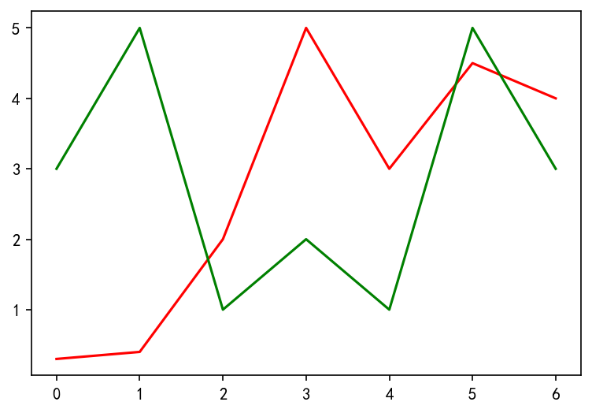
3．绘制统计直方图#
会 calcHist 也会 plot，合起来就能画直方图。
【例 13.7】把 calcHist() 的返回值绘制为直方图。
# ===== 13.2.2 例 13.7：plot 绘制 calcHist 的返回值（原书 boatGray.bmp → picture1.jpg） =====
import cv2
import matplotlib.pyplot as plt
o = cv2.imread("picture1.jpg", cv2.IMREAD_GRAYSCALE) # 灰度图（原书 image\boatGray.bmp）
histb = cv2.calcHist([o], [0], None, [256], [0, 256]) # 先统计
plt.plot(histb, color='b') # 再画成蓝色曲线
plt.show()
运行结果见图 13.14。流程就两步：calcHist 出数据，plot 画数据。
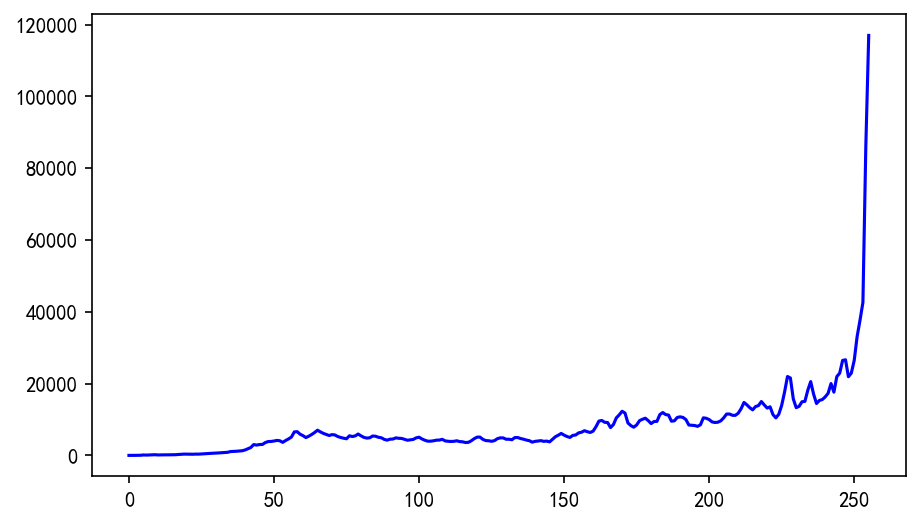
【例 13.8】把彩色图像 B、G、R 三个通道的直方图画进同一个窗口。
# ===== 13.2.2 例 13.8：彩图三通道直方图（原书 girl.bmp → picture2.png） =====
import cv2
import matplotlib.pyplot as plt
o = cv2.imread("picture2.png") # 彩色图（原书 image\girl.bmp）
histb = cv2.calcHist([o], [0], None, [256], [0, 256]) # B 通道
histg = cv2.calcHist([o], [1], None, [256], [0, 256]) # G 通道
histr = cv2.calcHist([o], [2], None, [256], [0, 256]) # R 通道
plt.plot(histb, color='b') # 蓝色画 B
plt.plot(histg, color='g') # 绿色画 G
plt.plot(histr, color='r') # 红色画 R
plt.show()
先分别统计 [0]、[1]、[2] 三个通道（即 B、G、R）的直方图数据，再依次画进同一窗口，结果见图 13.15。三条曲线叠在一起，各通道的亮度分布差异一眼可见。
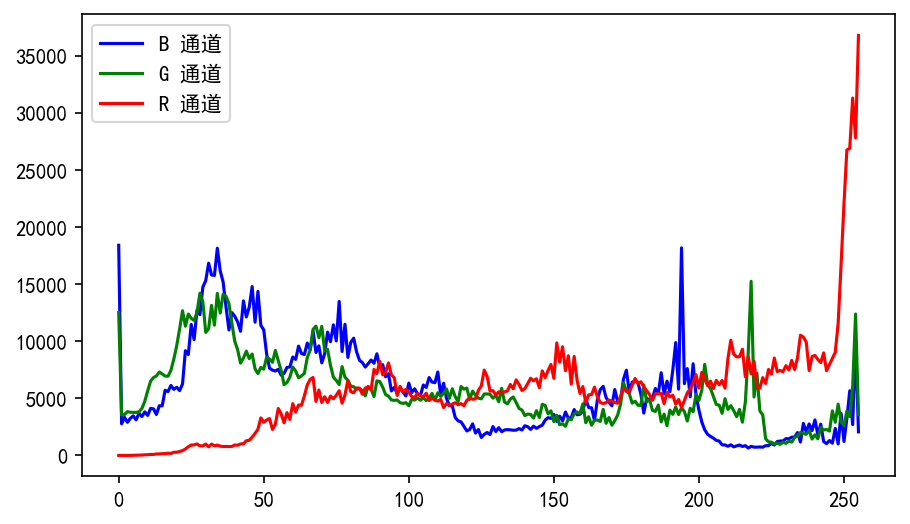
13.2.3 使用掩模绘制直方图#
calcHist() 的 mask 参数决定是否使用掩模图像（mask）。用了掩模，就只统计掩模指定区域的直方图。
1．掩模处理是怎么回事#
图 13.16 中，左图是原始图像 O，中间是掩模图像 M，右图是用 M 对 O 做掩模运算的结果 R。
直观理解：把掩模图像看作一块玻璃板，白色区域透明，黑色区域不透明。把玻璃板盖在原始图像上，透出来的部分就是掩模运算的结果。
掩模运算用到"与""或"两种逻辑运算，用电路理解最直接（图 13.17）：
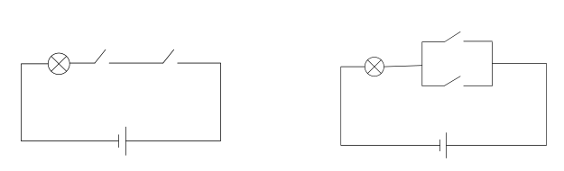
- 与运算（AND）对应串联电路：两个开关都闭合电路才通。数值上，参与运算的值都是 1，结果才是 1（表 13-3）；
- 或运算（OR）对应并联电路：任一开关闭合电路就通。数值上，参与运算的值只要有一个是 1，结果就是 1（表 13-4）。
| 运算值 1 | 运算值 2 | 结果 |
|---|---|---|
| 0 | 0 | 0 |
| 0 | 1 | 0 |
| 1 | 0 | 0 |
| 1 | 1 | 1 |
| 运算值 1 | 运算值 2 | 结果 |
|---|---|---|
| 0 | 0 | 0 |
| 0 | 1 | 1 |
| 1 | 0 | 1 |
| 1 | 1 | 1 |
把原始图像 O 与掩模图像 M 逐位置做与运算：掩模中值为 1 的位置，原图的值被保留；掩模中值为 0 的位置，原图的值被处理为 0。也就是原图中只有掩模白色（值为 1）区域里的内容被保留下来。
在实际图像上跑一遍（灰度 picture2.png，掩模为中心 200×200 的白块），效果见图 13.40：掩模白色区域的内容原样保留，黑色区域全部置黑。
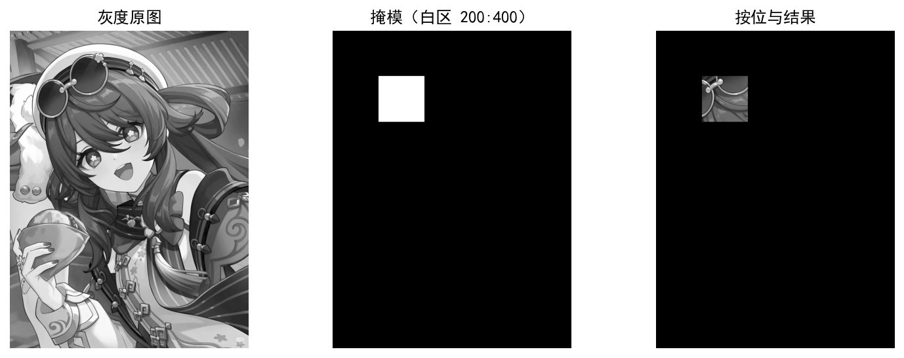
直接用 0/1 做与运算理解方便，实际处理中更常用按位与（bitwise AND）：先把两个像素值转成二进制，再逐位做与运算。OpenCV 提供了 cv2.bitwise_and 函数做这件事。例如像素值 A = 35、B = 126：
| 说明 | 二进制值 |
|---|---|
| A（35） | 0010 0011 |
| B（126） | 0111 1110 |
| 按位与的结果（34） | 0010 0010 |
按位与有两条对掩模特别有用的性质：
- 任意数值与 1 按位与，结果是它本身。推广到 8 位：任意像素值与二进制 1111 1111（十进制 255）按位与，结果不变。例如 58（0011 1010）与 135（1000 0111）分别和 255 按位与，仍是 58 和 135；
- 任意数值与 0 按位与，结果是 0。任何像素值和 0 按位与都变成 0。
所以掩模图像的标准构造是：白色区域设 255，黑色区域设 0（图 13.19）。它与原始图像按位与后：
- 与掩模黑色位置对应的部分：像素值全部置零；
- 与掩模白色位置对应的部分：像素保留原值。
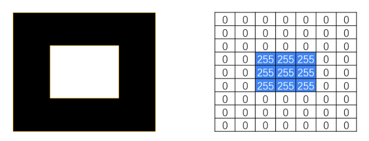
在一个函数 F 中使用掩模，等价于先把图像 I 和掩模 M 按位与，再把结果交给函数处理：
- R = F(I)：直接对图像 I 做 F 运算；
- R = F(I, M)：先 I 与 M 按位与，再对按位与的结果做 F 运算。
实际使用时只需构造掩模图像，按位与由函数内部完成，不用操心。
2．构造掩模图像#
构造方法两步：先用 np.zeros() 生成全 0 二维数组，再把指定区域的值设为 255。
【例 13.9】构造中心是白色区域的掩模图像。
# ===== 13.2.3 例 13.9：构造中心白色的掩模图像 =====
import cv2
import numpy as np
mask = np.zeros([600, 600], np.uint8) # 600×600 全 0（全黑）二维数组
mask[200:400, 200:400] = 255 # 第 200~399 行 × 第 200~399 列置 255（白）
cv2.imshow('mask', mask)
cv2.waitKey()
cv2.destroyAllWindows()
生成的掩模图像见图 13.20：黑底中央一块 200×200 的白方块。
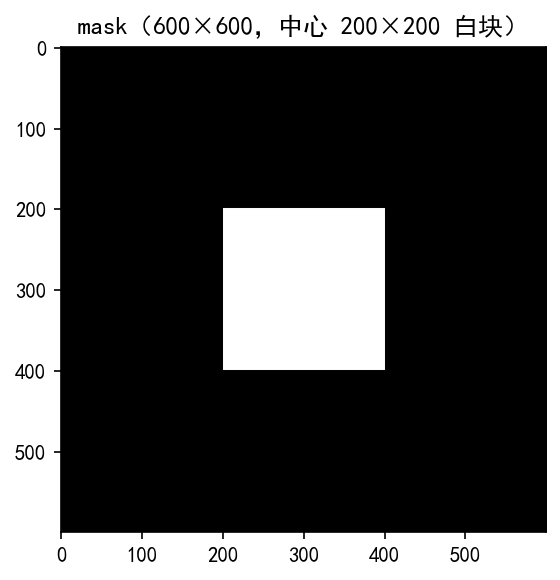
3．使用掩模绘制直方图#
把 calcHist() 的 mask 参数设为掩模图像，得到掩模区域的直方图数据，再用 plot() 画出来。掩模必须与原始图像大小相等——用 image.shape 构造等大小的掩模最省心。
【例 13.10】绘制掩模结果图像的直方图。
# ===== 13.2.3 例 13.10：掩模直方图（原书 girl.bmp → picture2.png） =====
import cv2
import numpy as np
import matplotlib.pyplot as plt
image = cv2.imread("picture2.png", cv2.IMREAD_GRAYSCALE) # 灰度图，1387×1040
mask = np.zeros(image.shape, np.uint8) # 与原图等大小的全 0 掩模
mask[200:400, 200:400] = 255 # 白区：200 行 × 200 列（原书同款区域）
histImage = cv2.calcHist([image], [0], None, [256], [0, 256]) # 整图直方图
histMI = cv2.calcHist([image], [0], mask, [256], [0, 256]) # 掩模区域直方图
plt.plot(histImage) # 整图曲线（整体高）
plt.plot(histMI) # 掩模曲线（整体矮）
plt.show()
print(int(histImage.sum()), image.size) # 总和核对
print(int(histMI.sum()), int((mask == 255).sum()))
结果见图 13.21：上方的曲线是原始图像的直方图，下方的是掩模区域的直方图——后者只统计了那 200×200 的小块。
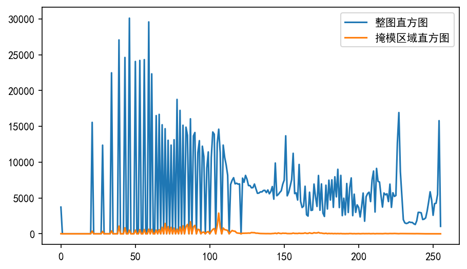
拓展：用总和核对掩模直方图
掩模直方图有个方便的自检性质：histMI.sum() 必须等于掩模白色区域的像素个数，整图直方图的 sum() 必须等于图像总像素数。实测（picture2.png，掩模 200:400）：整图直方图总和 1442480 = 图像总像素数 1442480；掩模直方图总和 40000 = 掩模白区像素数 40000。总和对不上，多半是掩模尺寸、数据类型或 ranges 写法出了问题。
13.3 直方图均衡化#
如果一幅图像拥有全部可能的灰度级，且像素灰度均匀分布，它就有高对比度和多变的灰度色调，灰度级丰富、覆盖范围大，外观上不过暗也不过亮。直方图均衡化（histogram equalization）做的就是这件事：把挤在一起的灰度级摊开。
图 13.22 是均衡化前后的对比：左图整体偏暗，右图色彩均衡。
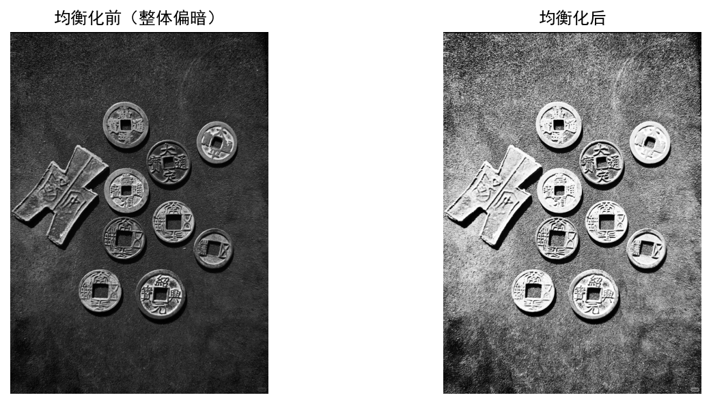
从直方图看更清楚（图 13.23）：左图（原始图像）的像素几乎全挤在低灰度区，较亮的像素很少，所以图像偏暗；右图（均衡化后）像素铺满整个灰度空间，分布更均衡。
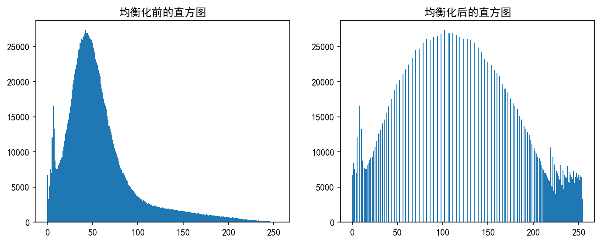
均衡化的主要目的是把原始图像的灰度级均匀地映射到整个灰度级范围内，得到灰度级分布均匀的图像。这种均衡包含两层：
- 统计概率上的均衡：各灰度级出现的概率尽可能均匀；
- 人眼视觉系统（Human Visual System，HVS）上的均衡：人眼分不清相邻灰度级的细微差别，会把相近的灰度级看成同一级。
用一个例子看 HVS 的作用。某图像只出现 1、2、3、101、102、103 六个像素值，分布见表 13-5：
| 灰度级 | 1 | 2 | 3 | 101 | 102 | 103 |
|---|---|---|---|---|---|---|
| 情况 A 像素个数 | 1 | 1 | 1 | 1 | 1 | 1 |
| 情况 B 像素个数 | 1 | 1 | 1 | 0 | 0 | 3 |
- 情况 A：每个灰度级都出现 1 次，灰度级均匀映射到当前范围，直方图是均衡的；
- 情况 B：表面上不均衡——101、102 一次都没出现，103 出现 3 次。但从 HVS 角度，人眼的敏感度不足以区分 1 个像素值的差异：灰度级 1、2、3 会被看成同一级，101、102、103 也会被看成同一级。整幅图实际分成两组，灰度级 \([1, 3]\) 一组、\([101, 103]\) 一组，每组各出现 3 次，概率相等。均衡化处理综合考虑的就是统计概率与 HVS 双重均衡。
13.3.1 直方图均衡化原理#
均衡化算法两步走：
- 计算累计直方图；
- 对累计直方图进行区间转换。
在此基础上，再利用人眼视觉特性达到均衡的目的。用一个 3 位位图演示全程：图像 A 共有 \(2^3 = 8\) 个灰度级（范围 \([0, 7]\)），49 个像素，如图 13.24 所示。
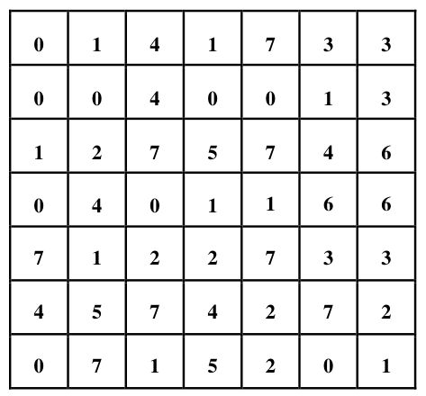
第一步，统计各灰度级的像素个数，并算出概率与累计概率（出现概率 = 出现次数 ÷ 像素总数 49）：
| 灰度级 | 0 | 1 | 2 | 3 | 4 | 5 | 6 | 7 |
|---|---|---|---|---|---|---|---|---|
| 像素个数 | 9 | 9 | 6 | 5 | 6 | 3 | 3 | 8 |
| 概率 | 0.18 | 0.18 | 0.12 | 0.10 | 0.12 | 0.06 | 0.06 | 0.16 |
| 累计概率 | 0.18 | 0.37 | 0.49 | 0.59 | 0.71 | 0.78 | 0.84 | 1.00 |
第二步，区间转换——用累计概率乘以目标空间的最大灰度级，得到新灰度级。可以在原有范围 \([0, 7]\) 内转换，也可以扩展到更广的范围。
方式一：在原有范围内实现均衡化。用累计概率乘以当前最大值 7：
| 灰度级 | 0 | 1 | 2 | 3 | 4 | 5 | 6 | 7 |
|---|---|---|---|---|---|---|---|---|
| 累计概率 | 0.18 | 0.37 | 0.49 | 0.59 | 0.71 | 0.78 | 0.84 | 1.00 |
| 均衡化值（新灰度级） | 1 | 3 | 3 | 4 | 5 | 5 | 6 | 7 |
按这个映射关系把原像素搬过去：
| 原灰度级 | 原像素个数 | 均衡化后的灰度级 |
|---|---|---|
| 0 | 9 | 1 |
| 1、2 | 9 + 6 = 15 | 3 |
| 3 | 5 | 4 |
| 4、5 | 6 + 3 = 9 | 5 |
| 6 | 3 | 6 |
| 7 | 8 | 7 |
于是均衡化后各灰度级的像素个数如下（均衡化后的图像中不再存在灰度级 0 和灰度级 2）：
| 均衡化后的灰度级 | 0 | 1 | 2 | 3 | 4 | 5 | 6 | 7 |
|---|---|---|---|---|---|---|---|---|
| 像素个数 | 0 | 9 | 0 | 15 | 5 | 9 | 3 | 8 |
图 13.25 是均衡化前后的直方图对比：右图在整个灰度空间内分布更均衡。
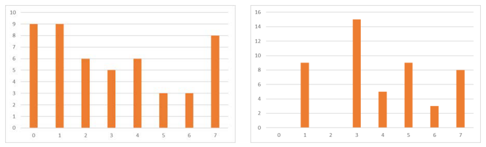
均衡效果用分组像素数验证：
- 均衡化之前：灰度级 0~3 共 29 个像素，灰度级 4~7 共 20 个像素；
- 均衡化之后：灰度级 0~3 共 24 个像素，灰度级 4~7 共 25 个像素。
29:20 变成 24:25，灰度级分布更均衡了。这是综合考虑统计概率和 HVS 的结果。
方式二：在更广泛的范围内实现均衡化。用累计概率乘以更广范围的最大值。例如把灰度空间扩展为 \([0, 255]\)，就用累计概率乘以 255：
| 灰度级 | 0 | 1 | 2 | 3 | 4 | 5 | 6 | 7 |
|---|---|---|---|---|---|---|---|---|
| 累计概率 | 0.18 | 0.37 | 0.49 | 0.59 | 0.71 | 0.78 | 0.84 | 1.00 |
| 均衡化值 | 47 | 94 | 125 | 151 | 182 | 198 | 213 | 255 |
均衡化后，图像 A 的灰度级在新灰度空间 \([0, 255]\) 内保持均衡。均衡化前的直方图挤在 \([0, 7]\) 内（图 13.26），均衡化后铺满整个 \([0, 255]\)（图 13.27）。
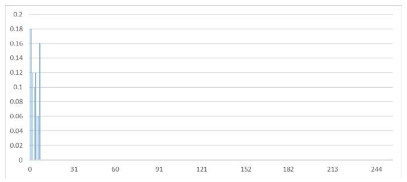
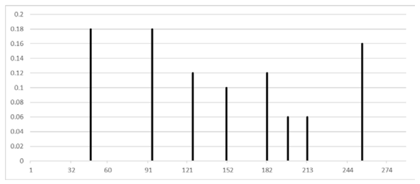
用数学表达式把整个过程写一遍。设图像像素总数为 N，灰度级数为 L，灰度级空间为 \([0, L-1]\)，第 k 级灰度（像素值为 k）的像素个数为 \(n_k\)，则该灰度级 \(r_k\) 出现的概率为：
均衡化处理的计算公式为：
式中求和项就是累计概率，乘以最大灰度级 L−1，即得到均衡化后的新灰度级（像素值）。
拓展：OpenCV 的 equalizeHist 与书里公式略有差别
书中公式是教材标准式，上面两个表都是它的结果。OpenCV 的实现在此基础上多做一步最小值拉伸：先找到第一个非零灰度级，把它的映射值定为 0，再按 scale = 255 ÷ (N − 最小灰度级的像素个数) 拉伸。实测图像 A，cv2.equalizeHist 的映射是 0→0、1→57、2→96、3→128、4→166、5→185、6→204、7→255（各灰度级的像素个数 9、9、6、5、6、3、3、8 与上表完全一致，只是目标值不同）。两种算法都让灰度铺满整个空间，效果方向一致。
拓展：自适应均衡化 CLAHE（本书未涉及）
普通均衡化对整幅图一刀切，噪声会被同步放大。OpenCV 另有限制对比度自适应直方图均衡化（CLAHE，Contrast Limited Adaptive Histogram Equalization）：把图像分块分别均衡，并限制每块直方图的高度。两行代码即可使用：
直方图均衡化使图像色彩更均衡、外观更清晰，也更便于后续处理，广泛应用在医学图像处理、车牌识别、人脸识别等领域。
13.3.2 直方图均衡化处理#
OpenCV 用 cv2.equalizeHist() 实现直方图均衡化，语法格式为：
src 是 8 位单通道原始图像，dst 是均衡化结果。
【例 13.11】用 equalizeHist() 实现直方图均衡化。
# ===== 13.3.2 例 13.11：直方图均衡化（原书 equ.bmp → picture12.jpg） =====
import cv2
import matplotlib.pyplot as plt
# ----------读取原始图像----------
img = cv2.imread('picture12.jpg', cv2.IMREAD_GRAYSCALE) # 暗图，灰度均值约 57（原书 equ.bmp）
# ----------直方图均衡化处理----------
equ = cv2.equalizeHist(img) # 一行完成均衡化
# ----------显示均衡化前后的图像----------
cv2.imshow("original", img)
cv2.imshow("result", equ)
# ----------显示均衡化前后的直方图----------
plt.figure("原始图像直方图") # 构建窗口（matplotlib 默认字体不含中文，标题会显示方框）
plt.hist(img.ravel(), 256) # 均衡化前的直方图
plt.figure("均衡化结果直方图") # 构建新窗口
plt.hist(equ.ravel(), 256) # 均衡化后的直方图
# ----------等待释放窗口----------
cv2.waitKey()
cv2.destroyAllWindows()
运行结果见图 13.28：(a) 原始图像，(b) 均衡化后的图像，© 原始图像的直方图，(d) 均衡化后图像的直方图。
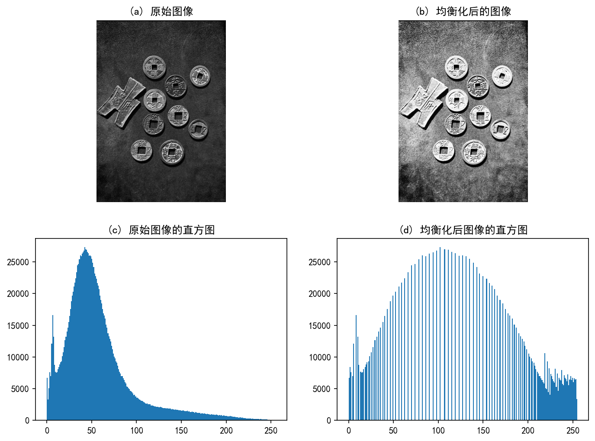
对比很明显：均衡化之前图像整体偏暗，均衡化以后亮度变得均衡。但两幅直方图的对比不那么直观——这正是"统计概率 + HVS"综合均衡的体现：
- 原始图像的直方图（c）：像素几乎全挤在左侧低灰度区，\([100, 255]\) 段近乎空白——图像偏暗；
- 均衡化后的直方图（d）：分布铺满整个 \([0, 255]\)，整体近似"每个区间等高"，但曲线呈梳状尖峰——大量像素被映射到相邻的少数灰度级上，形成一根根细高的尖峰；
- 人眼感受不到像素值的细微差别，把相近的像素值看成同一个值之后，直方图就近似均衡了。换个角度，把灰度级按区间划分，\([0, 50]\)、\([51, 100]\)、\([101, 150]\)、\([151, 200]\)、\([201, 255]\) 各区间内的像素个数大体一致——按区间看，它就是均衡的直方图。
实测验证这个"按区间大体一致"的说法（picture12.jpg）：均衡化前像素在上述五个区间的占比为 0.532、0.355、0.068、0.034、0.011，几乎全挤在低灰度区；均衡化后变为 0.196、0.192、0.202、0.192、0.218——每个区间都在 0.2 附近，分布均衡。
equalizeHist 只接受 8 位单通道
对彩色图直接调用会报错（实测）：error: (-215:Assertion failed) _src.type() == CV_8UC1 in function 'cv::equalizeHist'。要均衡彩色图，要么拆成 B、G、R 三个通道分别均衡再合并，要么转到 HSV 色彩空间只均衡 V 通道（亮度），避免色度被破坏。
拆通道方案的实跑效果见图 13.41（picture12.jpg）：暗图整体提亮，对比度明显增强。
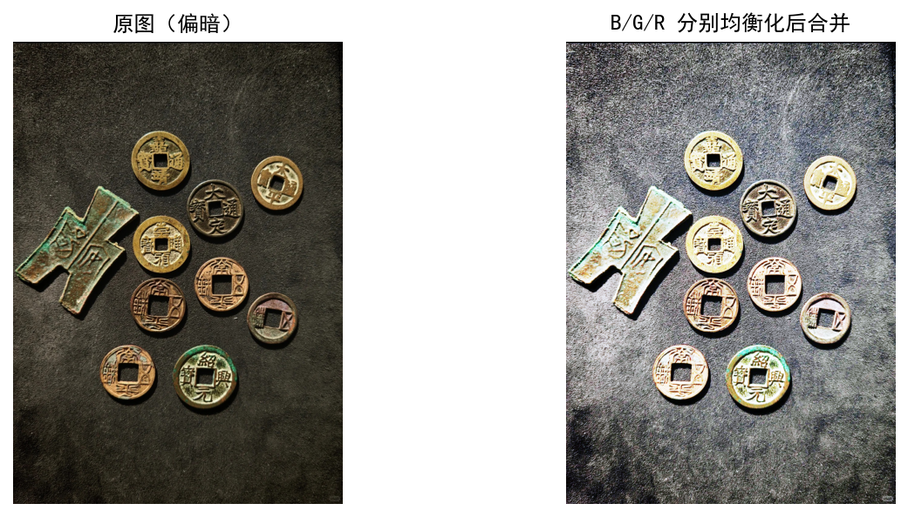
拓展：直方图对比与反向投影（本书未涉及）
OpenCV 还有两个以直方图为基础的工具本章没有展开：cv2.compareHist() 用于比较两个直方图的相似度，提供相关性（Correlation）、卡方（Chi-Square）、交叉（Intersection）、巴氏距离（Bhattacharyya distance）等多种度量，常用于图像匹配；cv2.calcBackProject() 反向投影（back projection）把直方图映射回图像，突出符合目标分布的像素，是均值漂移跟踪等算法的基础。
13.4 pyplot 模块介绍#
matplotlib.pyplot 模块提供了类似 MATLAB 的绘图框架，本章再用到其中两个函数。
13.4.1 subplot 函数#
matplotlib.pyplot.subplot() 向当前窗口内添加一个子窗口对象，语法格式为：
- nrows：行数；
- ncols：列数；
- index：窗口序号。
例如 subplot(2, 3, 4) 表示在两行三列的窗口网格的第 4 个位置添加子窗口，见图 13.30。
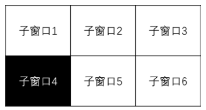
两个规则：
- 子窗口按行方向排序，序号从 1 开始而不是从 0 开始；
- 所有参数都小于 10 时，可以省略彼此之间的逗号直接写三个数字：
subplot(2, 3, 4)可写成subplot(234)。
【例 13.12】演示 subplot() 的使用。
# ===== 13.4.1 例 13.12：subplot 两个子窗口（原书 equ.bmp → picture12.jpg） =====
import cv2
import matplotlib.pyplot as plt
img = cv2.imread('picture12.jpg', cv2.IMREAD_GRAYSCALE) # 灰度图
equ = cv2.equalizeHist(img) # 均衡化
plt.figure("subplot 示例")
plt.subplot(121), plt.hist(img.ravel(), 256) # 1 行 2 列的第 1 个子窗口：均衡化前
plt.subplot(122), plt.hist(equ.ravel(), 256) # 第 2 个子窗口：均衡化后
plt.show()
运行后一个窗口内出现左右两个子图（原书图 13.31）：左边是均衡化前的直方图，右边是均衡化后的直方图。
index 从 1 开始，写 0 直接报错
实测 plt.subplot(1, 1, 0) 抛出 ValueError: num must be an integer with 1 <= num <= 1, not 0。序号上限是 nrows×ncols，越界同样报错。
13.4.2 imshow 函数#
matplotlib.pyplot.imshow() 用来显示图像，语法格式为：
- X：图像信息，可以是各种形式的数值；
- cmap：色彩空间，可选项，默认使用 RGB(A) 色彩空间。
【例 13.13】用 imshow() 显示彩色图像。
# ===== 13.4.2 例 13.13：imshow 显示彩色图，BGR 要转 RGB（原书 girl.bmp → picture2.png） =====
import cv2
import matplotlib.pyplot as plt
img = cv2.imread('picture2.png') # cv2.imread 读出的是 BGR 顺序
imgRGB = cv2.cvtColor(img, cv2.COLOR_BGR2RGB) # BGR → RGB
plt.figure("显示结果")
plt.subplot(121)
plt.imshow(img), plt.axis('off') # 左：直接显示 BGR 图，通道错乱，颜色不对
plt.subplot(122)
plt.imshow(imgRGB), plt.axis('off') # 右：转成 RGB 后显示正常
plt.show()
语句 plt.axis('off') 表示关闭坐标轴的显示。结果见图 13.32：左图直接用默认色彩空间显示，颜色不对——cv2.imread() 读到的图像是 BGR 模式，而 imshow() 按 RGB 模式解释，通道顺序错乱，无法正常显示；右图先经 cv2.cvtColor(img, cv2.COLOR_BGR2RGB) 转成 RGB 再显示，正常。
【例 13.14】用不同形式显示灰度图像，观察哪种能正常显示。
# ===== 13.4.2 例 13.14：imshow 显示灰度图的四种形式（原书 girl.bmp → picture2.png） =====
import cv2
import matplotlib.pyplot as plt
o = cv2.imread('picture2.png') # 彩色图
g = cv2.cvtColor(o, cv2.COLOR_BGR2GRAY) # 转成真灰度图（二维）
plt.figure("灰度图像显示演示")
plt.subplot(221)
plt.imshow(o), plt.axis('off') # 左上：彩色图默认显示
plt.subplot(222)
plt.imshow(o, cmap=plt.cm.gray), plt.axis('off') # 右上：彩色图指定灰度 cmap
plt.subplot(223)
plt.imshow(g), plt.axis('off') # 左下：灰度图默认显示
plt.subplot(224)
plt.imshow(g, cmap=plt.cm.gray), plt.axis('off') # 右下：灰度图指定 gray
plt.show()
结果见图 13.33，四种形式中只有"灰度图像 + cmap=plt.cm.gray"显示正常：
- 左上：彩色图直接显示，通道顺序错乱，没有正常显示；
- 右上：给彩色图设置
cmap=plt.cm.gray，显示失败； - 左下：灰度图用默认 RGB 模式显示，会套上默认伪彩色，没有正常显示；
- 右下：灰度图 +
cmap=plt.cm.gray，正常显示灰度图像。
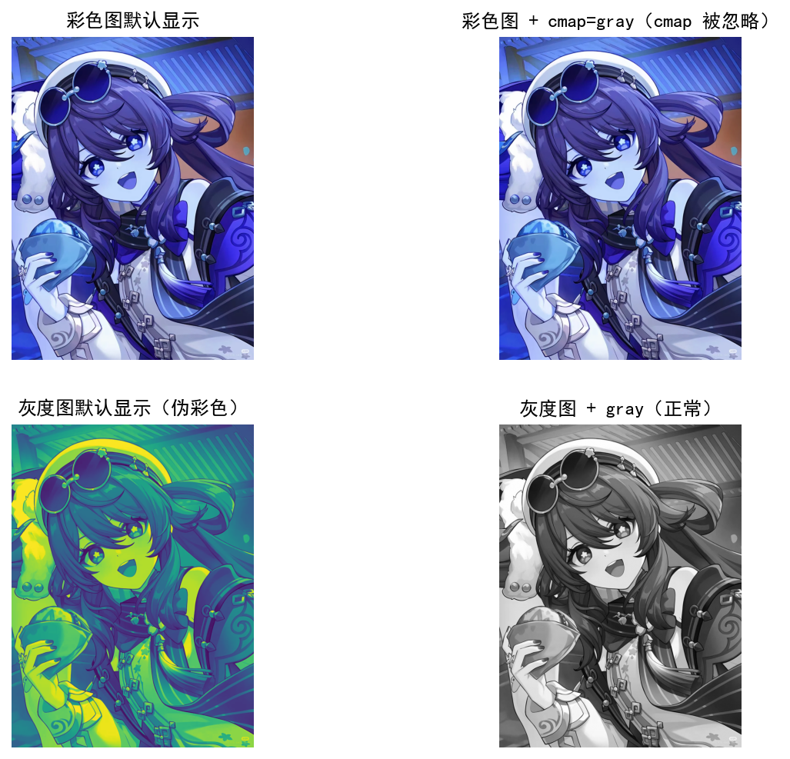
原书说法与实测不符：给彩色图设 cmap 不会报错，而是被忽略
原书把右上角的失败描述为"图像显示失败"。实测（Matplotlib 3.10）：对三维 RGB 数组设置 cmap 不报错也不生效——cmap 只对二维数组起作用，彩色图仍按 RGB 渲染，右上角显示的其实是和左上角一样的乱色图像。结论不变：cmap 对彩色图没有意义，显示灰度图必须传二维数组并给 cmap='gray'。
【例 13.15】用不同参数形式显示灰度图像。
# ===== 13.4.2 例 13.15：gray 与 gray_r（原书 8.bmp → picture2.png） =====
import cv2
import matplotlib.pyplot as plt
o = cv2.imread('picture2.png')
g = cv2.cvtColor(o, cv2.COLOR_BGR2GRAY) # 真灰度图
plt.figure("灰度图像显示演示")
plt.subplot(221); plt.imshow(g, cmap=plt.cm.gray) # 灰度：0 黑 255 白
plt.subplot(222); plt.imshow(g, cmap=plt.cm.gray_r) # _r = reverse：黑白反转
plt.subplot(223); plt.imshow(g, cmap='gray') # 字符串写法，与 plt.cm.gray 等价
plt.subplot(224); plt.imshow(g, cmap='gray_r') # 字符串写法的反转版
plt.show()
cmap 参数值 plt.cm.gray_r 及 gray_r 中的 r 是英文 reverse（逆转）的缩写，显示效果黑白对调。运行结果见图 13.34。
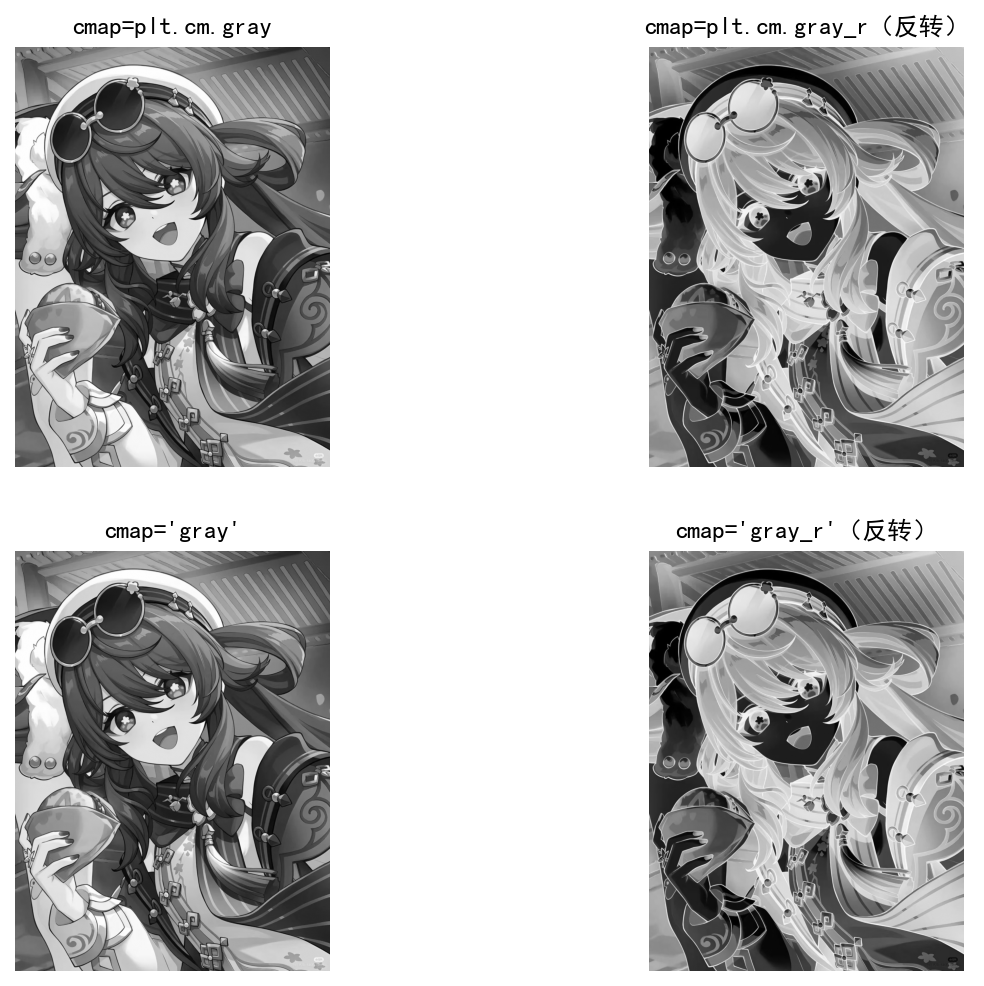
拓展：cmap 的两种写法等价
plt.cm.gray 与字符串 'gray' 是同一个色图的两种写法，可以混用。常用速记：gray 灰度显示、gray_r 反转、viridis 默认伪彩色、jet 经典伪彩色。给二维数组显示时忘了写 cmap，Matplotlib 就用 viridis 给灰度上色，看起来"发绿发蓝"——这不是错误，只是没进灰度模式。
坑与陷阱#
8 个容易踩的坑
- calcHist 的参数要用方括号括起来：
cv2.calcHist(img, 0, None, 256, [0, 256])直接报Can't parse 'channels'. Input argument doesn't provide sequence protocol。images、channels、histSize（ranges 也建议）一律写成[img]、[0]、[256]。 - ranges 写 [0, 255] 会丢灰度 255：histSize=256 时 bin 宽 255/256≈0.996，灰度值 255 落在范围外被整体丢弃（实测 1039 个像素凭空消失，直方图总和小于像素总数）。8 位图统一写
[0, 256]。 - plt.hist 需要一维数据：直接喂二维图像不报错，但每列被当成一个独立数据集（1387×1040 的图返回 1040 组数据），画出来的根本不是整图直方图。先
img.ravel()或img.flatten()。 - 掩模必须与原图同尺寸且单通道：否则报
mask.size() == imsize && mask.channels() == 1断言错误。用np.zeros(image.shape, np.uint8)构造最稳妥。 - equalizeHist 只吃 8 位单通道：彩色图直接均衡化报
_src.type() == CV_8UC1断言错误。彩图要先拆通道分别均衡再合并，或转 HSV 只均衡 V 通道。 - subplot 的序号从 1 开始：
plt.subplot(1, 1, 0)报ValueError: num must be an integer with 1 <= num <= 1, not 0；序号超过 nrows×ncols 也报错。参数都小于 10 时可写成subplot(234)的紧凑形式。 - matplotlib 中文标题乱码：默认字体不含中文，
plt.figure("原始图像直方图")的标题会显示成方框。需要plt.rcParams['font.sans-serif'] = ['SimHei']（并视情况加plt.rcParams['axes.unicode_minus'] = False）才能正常显示中文。 - imshow 与 OpenCV 的色彩空间不配套：彩色图直接
imshow会红蓝互换（BGR 被当 RGB），要先cv2.cvtColor(img, cv2.COLOR_BGR2RGB)；灰度图直接imshow会套 viridis 伪彩色，要写cmap='gray'。两步都做对，图才是原图。
速览#
- 直方图统计各灰度级出现的次数：横轴灰度级 \([0, 255]\)，纵轴像素个数；归一化直方图纵轴换成频率（次数 ÷ 总像素数），各频率之和为 1。
- 三个概念：DIMS 是收集的参数数量（通常 1），RANGE 是统计范围，BINS 是分组组数（256 级每 16 个一组即 BINS=16）。
plt.hist(o.ravel(), BINS)直接画直方图；X 必须一维，ravel()按行拉平且返回视图。cv2.calcHist([img], [0], None, [256], [0, 256])返回 shape 为 (256, 1) 的 ndarray，size 为 256；通道[0]/[1]/[2]对应 B/G/R。- 掩模直方图：
np.zeros(image.shape, np.uint8)后把目标区域置 255，作为 mask 参数传入；只统计白色区域，总和恰等于白区像素数。 - 掩模的本质是按位与：白 255 与任何值按位与都保留原值，黑 0 归零；函数内部自动完成，只需构造掩模。
- 直方图均衡化两步：算累计直方图 → 累计概率 × 最大灰度级做区间转换；可留在原范围，也可扩展到 \([0, 255]\)。
- 均衡是"统计概率 + HVS"双重均衡：均衡化后的直方图不是处处等高，但按区间看各区间像素数大体一致。
cv2.equalizeHist(src)一行完成均衡化，src 必须是 8 位单通道图；实测它比书里公式多做一步"最小灰度级拉到 0"的拉伸。plt.subplot(nrows, ncols, index)行优先排序、序号从 1 起；plt.imshow显示 OpenCV 图像要 BGR 转 RGB、灰度图加cmap='gray'，_r后缀黑白反转。
术语速查#
| 英文 / 函数 | 中文 | 一句话 |
|---|---|---|
| histogram | 直方图 | 统计图像内各灰度级出现次数的工具 |
| normalized histogram | 归一化直方图 | 纵轴从次数换成频率，各频率之和为 1 |
| gray level | 灰度级 | 像素的亮度取值，8 位图共 256 级 |
| DIMS | 参数数量 | 绘制直方图时收集的参数个数，通常为 1 |
| RANGE | 统计范围 | 要统计的灰度级区间，8 位图建议取 \([0, 256]\) |
| BINS | 子集数目 | 灰度级分组的组数，如 256 级分 16 组 |
| ravel | 拉平降维 | 把二维图像降成一维供 hist 使用，返回视图 |
| flatten | 拉平副本 | 同样降维，但返回独立副本 |
| matplotlib.pyplot.hist | 直方图绘制函数 | hist(X, BINS)，X 必须一维 |
| matplotlib.pyplot.plot | 曲线绘制函数 | 把 calcHist 的返回值画成直方曲线 |
| color | 绘图颜色 | plot 的属性，r 红、g 绿、b 蓝 |
| cv2.calcHist | 直方图统计函数 | 返回 (256,1) 数组，参数都要用列表括起来 |
| channels | 通道 | [0]/[1]/[2] 对应 B/G/R |
| mask | 掩模 | 白 255 保留、黑 0 置零的区域模板 |
| bitwise AND | 按位与 | 逐位做与运算，与 255 保留原值、与 0 归零 |
| cv2.bitwise_and | 按位与函数 | 对两个图像做逐位与运算 |
| histogram equalization | 直方图均衡化 | 把挤在一起的灰度级摊满整个灰度空间 |
| cumulative histogram | 累计直方图 | 概率逐级累加，均衡化转换的依据 |
| CDF（Cumulative Distribution Function） | 累积分布函数 | 累计概率曲线，乘以最大灰度级得映射值 |
| cv2.equalizeHist | 均衡化函数 | 8 位单通道专用，一行完成均衡化 |
| HVS（Human Visual System） | 人眼视觉系统 | 人眼把相近灰度看成同一级，均衡化考虑的因素 |
| contrast | 对比度 | 明暗反差，均衡化后显著增强 |
| CLAHE | 自适应均衡化 | 分块均衡并限制对比度，噪声放大更少 |
| compareHist | 直方图比较 | 相关、卡方、交叉、巴氏距离等相似度度量（本书未涉及） |
| back projection | 反向投影 | 把直方图映射回图像，突出目标分布区域（本书未涉及） |
| plt.subplot | 子窗口函数 | subplot(nrows, ncols, index)，序号从 1 起 |
| cv2.imshow / plt.imshow | 图像显示 | plt.imshow 默认按 RGB 解释，需先转换色彩空间 |
| cmap（colormap） | 色彩空间参数 | 灰度图显示必须设 gray，_r 后缀表示反转 |